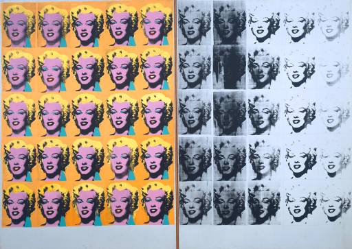
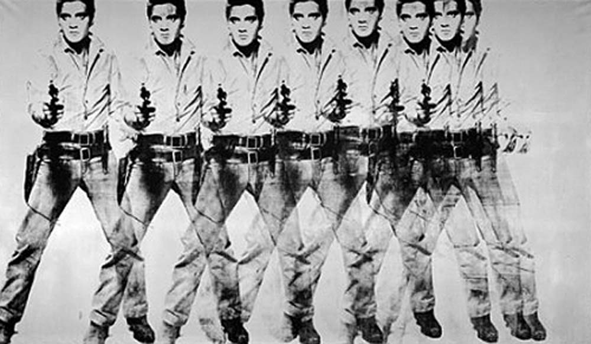

Galerie
Acasă
Despre
Curente artistice
Mini Joc
Curiozități
Galerie
Bibliografie
Pictură
Sculptură
Arhitectură
Satul - Maurice Vlamick
Remorchere pe Sena - Maurice Vlamick
Şcoala de dans - Ernst Ludwig Kirchner
Autoportretul - Ernst Ludwig Kirchner
Mare cu cer rosu - Pablo Picasso
Domnişoarele din Avignon - Pablo Picasso
Arlechin - Pablo Picasso
Trei dansatoare - Pablo Picasso
Portretul lui Ambroise Vollard - Pablo Picasso
Masa muzicianului - George Braques
Case la Estaque - George Braques
Vioară şi ulcior - George Braques
Contraste de forme - Fernand Léger
Mecanicul - Fernand Léger
Fluturi şi flori - Fernand Léger
Oraşul care suie - Umberto Boccioni
Viziuni simultane - Umberto Boccioni
Dinamismul unui corp omenesc - Umberto Boccioni
Tren într-un peisaj - Gino Severini
Hieroglifă dinamică la balul Tabarin
Nud coborând o scară - Marcel Duchamp
Regele şi regina înconjuraţi de tineri „iuţi” - Marcel Duchamp
Bacanală - Salvador Dali
Persistenţa memoriei - Salvador Dali

Marilyn Diptych - Andy Warhol

Eight Elvises - Andy Warhol
Close


{kind=link}
{kind=link}